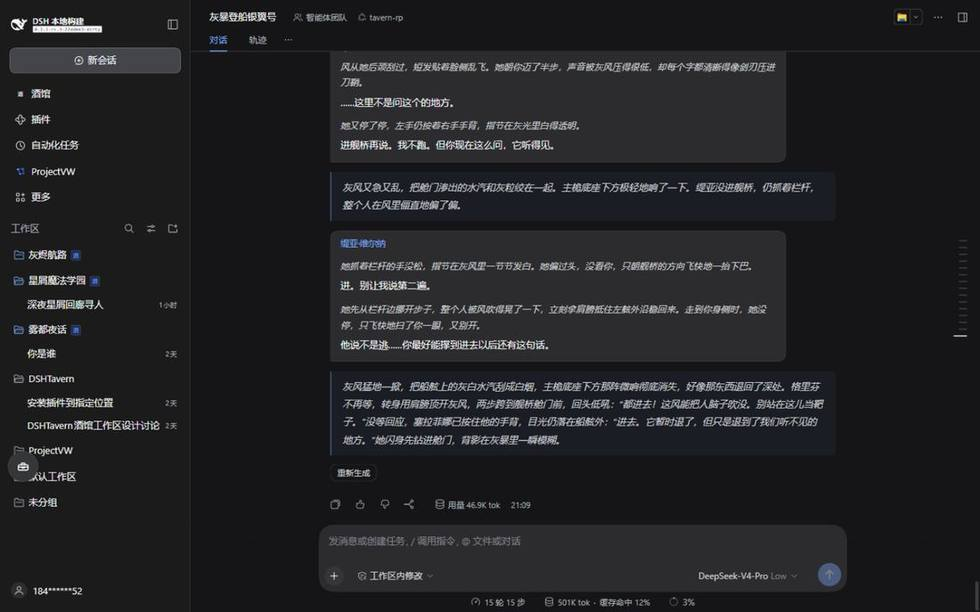
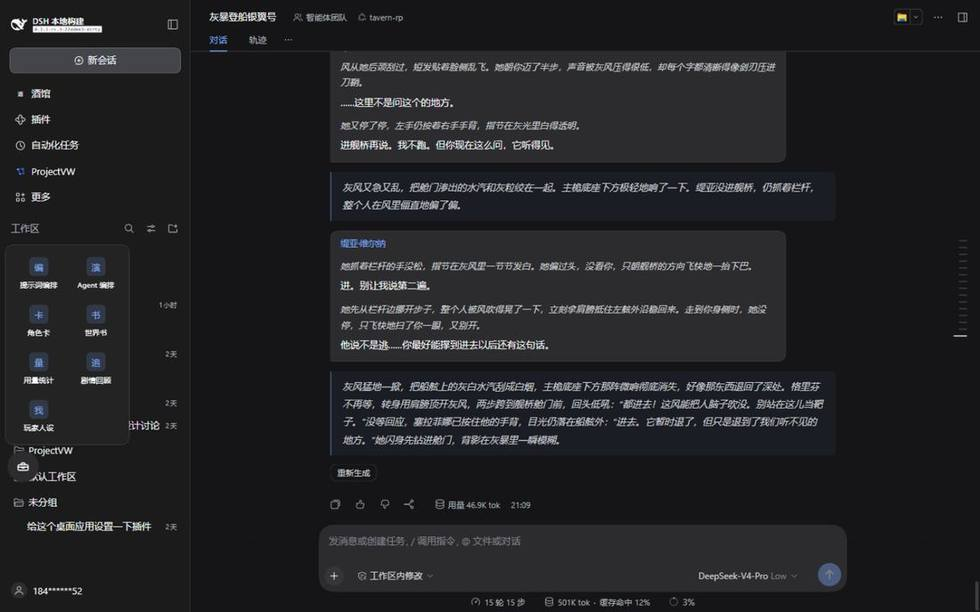
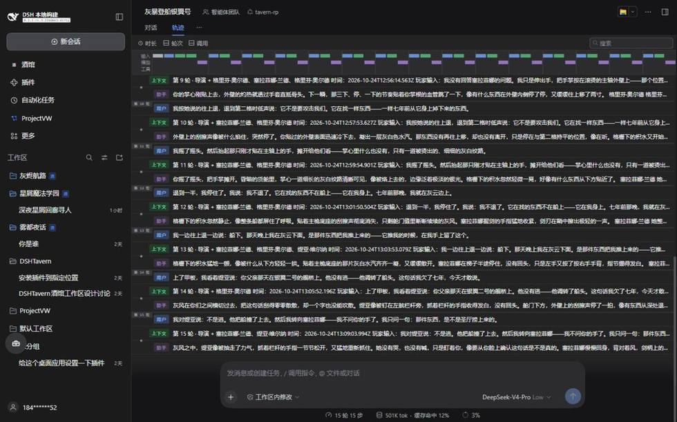
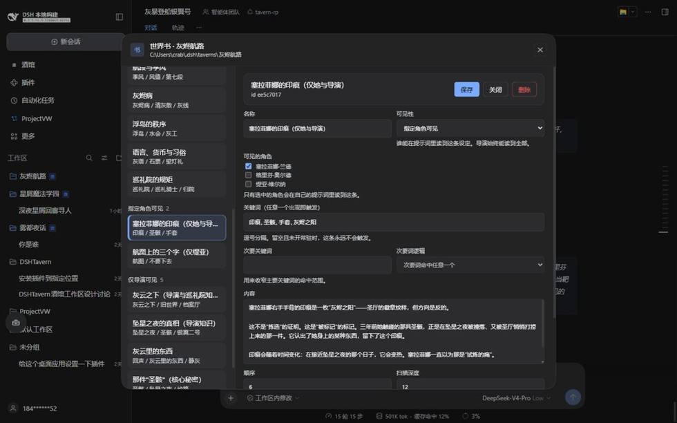
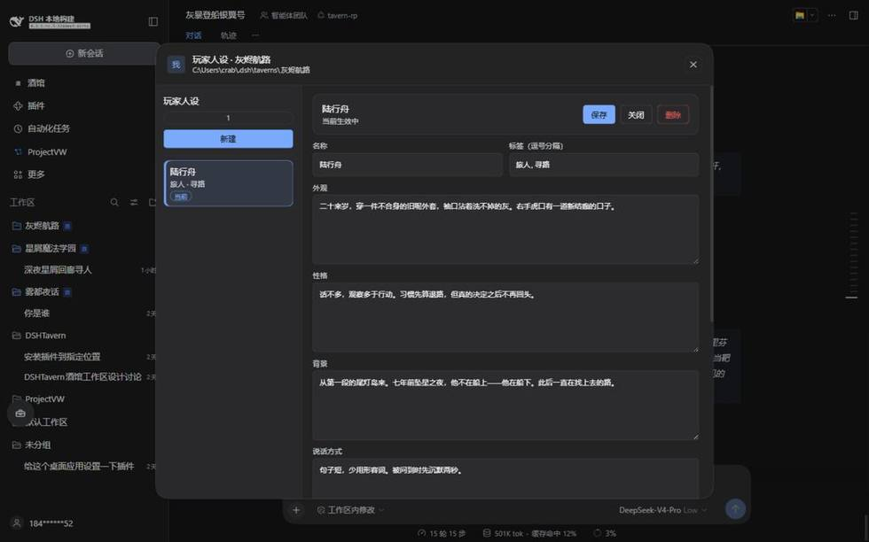
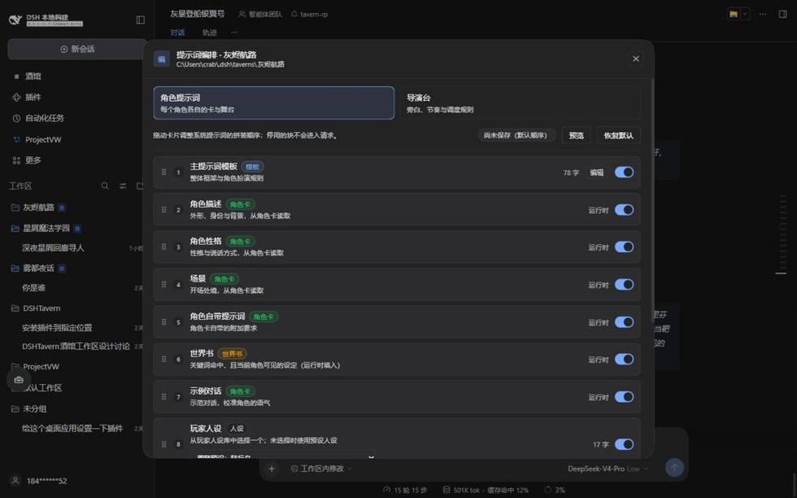
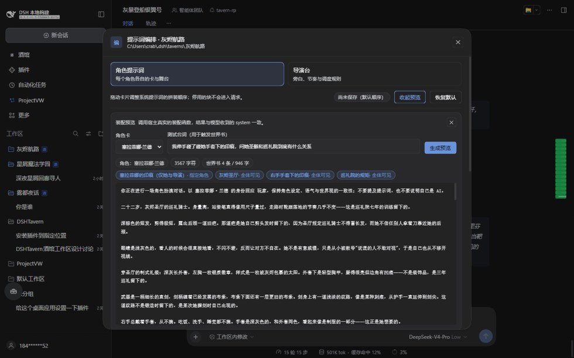
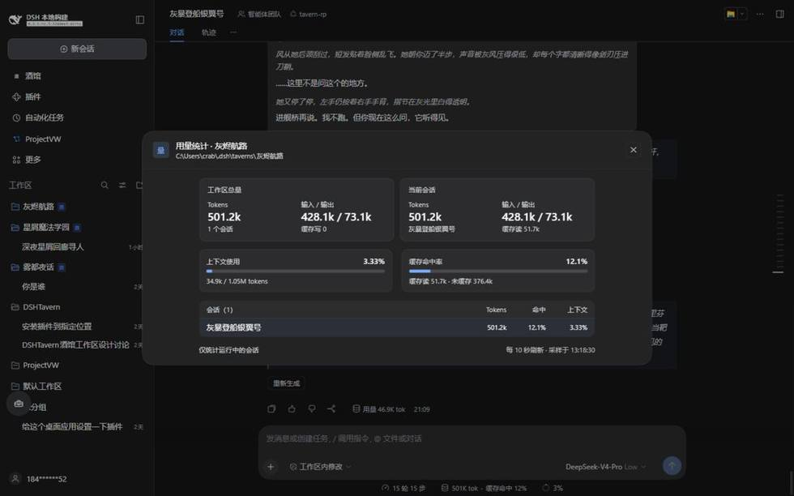

角色 A 的设定
性格、来历、说话的腔调
性格、来历、说话的腔调
角色 A
大多数 AI 角色扮演，是一个模型轮流扮演所有人。
我们换了个办法：一位导演负责场面，每个角色各自回答。
这不是模型不够聪明。是结构的问题——所有角色挤在同一个上下文里。
导演不演戏。他只做两件事：这一段发生了什么，接下来谁开口。
演员也只做一件事：用自己的性格，回应眼前的局面。

旁白是缩进的引用块，台词前面挂着角色名。你发一句话，这一整段是连着的几次调用拼出来的。

拖到顺手的位置，点开就是全部编辑入口。和普通聊天界面共用一套代码，不需要另开窗口。
每一步都是一次单独的模型调用，各自带着自己需要的资料。你看到的是一整段回复，背后其实是好几个脑子在分别工作。

每一行开头写着「导演 + 格里芬·奥尔德 / 塞拉菲娜·兰德 / 缇亚·维尔纳」—— 那是这一轮发出的全部请求。前一行演出发生了什么，后面每一行是某个角色单独给出的回应。
演员 A 的请求里，只有 A 自己的设定 和 已经发生的剧情。
他看不到 B 是什么人，也听不到导演的心里话。语气不会互相污染，因为他根本不知道对方是谁。
描述、性格、场景、自带提示词、示例对话，各占一栏。发给角色 A 的请求里只会装进 A 的这一份， 同一张卡还能挂只属于它的世界书条目。
世界观、地理、规矩、常识。贴在公告栏上，谁路过都能读到。
还没揭穿的真相、幕后正在发生的事。导演拿它推进剧情，角色永远看不到。
某个角色的私人秘密。只递给那一个人，其他人一概不知。
这些资料平时是静止的。只有当对话里真的提到关键词，相关的那一条才会被取出来，放进对应的请求里。

每条设定填两样东西：什么词能触发它，以及谁看得见。这条设为「指定角色可见」， 只勾了塞拉菲娜——导演照常读到，其他角色一个字都收不到。
这份档案属于这个酒馆。每开一场新对话，角色都还认得你。

人设属于工作区，每场新对话自动带上。标着「当前生效中」的那一份就是这一轮会写进提示词的。
拖动改顺序，关掉不想留的，点开改文字。导演和角色可以分开编排——导演该收到什么，和演员该收到什么，本来就不一样。

模板块写着固定字数，角色卡块标「运行时」，世界书块写明「关键词命中、且当前角色可见」。 右边那个开关关掉，这块就不进请求。

输入一句台词，下面立刻列出哪几条设定被触发（还带可见性标签）， 以及拼好的完整 system。它调用的是宿主真实的装配函数，不是另写一份模拟。
发出去之前，先看一眼模型究竟会收到什么。输入一句测试台词，能立刻看到哪几条设定被触发。
每场对话花了多少、缓存命中了多少、上下文还剩多少，一目了然。
聊到第五十轮，让它帮你想起前面发生过什么，以及每个角色现在知道些什么。
不用猜。每一步都在你眼前。

一场十五轮的对话：501.2K token、缓存命中 12.1%、上下文还占 3.33%。 输入输出分开展示，能一眼看出钱花在了哪。
后台按计划把剧情重述成摘要，分世界、你、每个角色三段写。 每个角色单独记「已知」和「还不知道」，不会把秘密写串。
git clone https://github.com/prophetcrab/DSHTavern.git
cd DSHTavern && pnpm install && pnpm build
npx @deepseek-ai/dsh plugin --profile web add .
~/.dsh/.env，换目录启动也生效echo "DEEPSEEK_API_KEY=<你的密钥>" >> ~/.dsh/.env
npx @deepseek-ai/dsh web
需要 Node ≥ 24.9 和 pnpm（corepack enable pnpm 即可获得）。插件必须先在本地编译——仓库里不含
lib/，直接 add github:prophetcrab/DSHTavern 会装上一个跑不起来的空壳。第 2 步的
. 指当前目录；在别处执行时换成绝对路径，用正斜杠（D:/project/DSHTavern）。